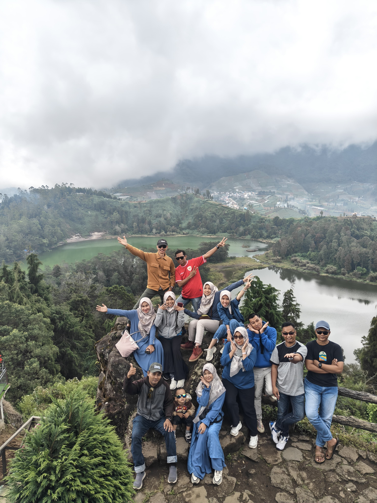

Paket Wisata

Wisata Bali
Harga: IDR 3,500,000
Rute: Denpasar, Ubud, Kuta, Nusa Penida
Penginapan: Hotel Bintang 3
Bali, dengan pantainya yang terkenal dan budayanya yang kaya, menawarkan pengalaman wisata yang tak terlupakan.

Wisata Lombok
Harga: IDR 4,200,000
Rute: Mataram, Senggigi, Gili Trawangan
Penginapan: Resort Pinggir Pantai
Lombok menawarkan pesona yang berbeda dengan panorama alam yang menakjubkan dan pantai yang belum terjamah.

Wisata Yogyakarta
Harga: IDR 2,800,000
Rute: Candi Borobudur, Malioboro, Keraton
Penginapan: Homestay Tradisional
Yogyakarta, kota penuh sejarah dan budaya, memberikan pengalaman unik dengan pemandangan Candi dan budaya Jawa.